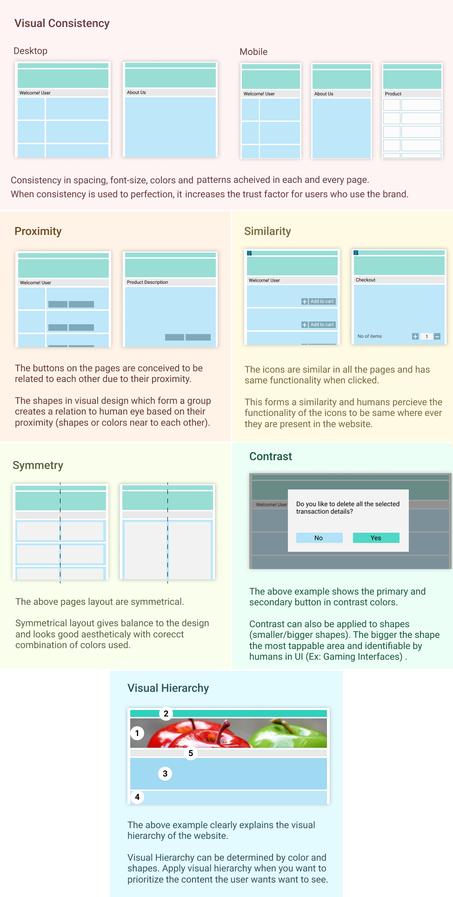

Blog
User Experience and User Interface Blog
Benefits in using Psychology while designing UX for your products.
Knowing Psychology about users is time worth spent in designing your User Experience. As the digital world is moving fast at a greater speed, understanding the user’s behaviour is more important.
As per psychology the human brain consists of more than 80-100 billion neurons, some of them waiting to be wired with new experience that stores as new memory. Every day from the day we are born our brain senses a new smell, sight, touch, sound and taste. Digital world as taken over our lives, we have lot of gadgets around us consuming digital data. So how to design a product with help of psychology that stands out of crowded apps or website.
Memory – Repetitive action makes memory stick.
A lot of mental resources in our brain is processed due to memorising things. A normal user remembers only four items at a time. Repetitive action makes memory stick. So, placing a home button in the same place in your website/app makes life easier for the user. Even consistent use of phrase of the button makes the user predict the action of the button before he clicks.Thinking – Mental model and Conceptual model.
When a new product is given to user based on the mental model, he has in his mind the user starts interacting with it. We designers design conceptual model based on assumptions and try to fit the mental model the user by using task analysis, persona and user journey to validate the mental model by designing the interface. So, understanding the mental and conceptual model makes life easier. Ex: Designing an Online form (conceptual model) with bit-sized chunks and grouping related items like the manual from (mental model) the users has to fill makes life easier.Read – Capital Letters, Small Letters and Length of Text.
Using capital letters and small letters forms a pattern within the user’s mind. It’s a myth that people can’t read capital letters easily. Both capital and small letters are easy to read by reducing the length of the text between 72 to 100 characters. Haven’t we used to read newspaper? And varying the font size forms a hierarchy for the users.Seeing – Peripheral Vision and Central Vision.
We see objects more using Peripheral Vision than using Central Vision. While we walk in traffic, we tend to see the obstacles that come our way by using peripheral vision. So, while designing the website/apps we tend to see more of visual cues. Visual Cues can be colour, button, links, and images. So, Designing the visual cues are more important to invite interaction.Attention – Danger, Food, Sex, Movement, Faces and Stories.
The chemical dopamine in our brain brings attention to danger, food, sex, movement, faces and stories. Using error messages with red colour, images of food, images of celebrity and animation in screen brings more attention to the user. Ex: Notifications popping at your right bottom of your monitor screen (Peripheral Vision).
Using Psychology in our User experience design can bridge the gap between your user and product.
Conventions are your best friend.
Users are currently spending lot of time with mobile apps. New apps are being published everyday the user has to learn the new design patterns to use the app. How to overcome the hurdle so, that the learnability is easy for the user? Use Design Conventions by using standard design patterns for the app.
In every country the traffic signal is coloured in Red, Green and Yellow. When a traveller goes to any country, he can recognize the pattern for stop (red colour) and go (Green) based on the colour pattern. The colour pattern for traffic signal has been widely recognized by all the users.
Design patterns: The home menu bar, footer links, wizard, picture gallery and carousel are some of the patterns widely used in website/apps. So, while designing any app we can take advantage of using design patterns which are familiar to the user.
As per psychology human brain recognise patterns while interacting with any product. And repetitive use of those patterns make life easier to complete a task. Ex: Lot of websites use shopify.com ecommerce platform to sell their products. When user shop in the websites that use shopify.com ecommerce platform they can easily recognize the patterns used in the site for purchasing a product.
So, Conventions by using standard design patterns in website/apps is one of the best practices to implement while creating User Experience which reduces the learnability curve for the users.
Visual Design Principles to get you started.
Visual Consistency, Proximity, Similarity, Contrast and Visual Hierarchy

Icon for Apps SVG Vs PNG
In early days we designers relied on GIF (Graphic interchange format) as the default file for icons. GIF format was slow to download and slowly replaced by PNG (Portable Network Graphic). Now slowly we are adapting to SVG (scalable vector graphics) but, still designers rely on PNG.
As the mobile apps started to use PNG as the default file format for icons, the pain was to export icons and code it for mdpi, hdpi, xhdpi, xxhdpi, and xxxhdpi. Why SVG? What is the advantage?
Advantage of using SVG (Scalable Vector Graphics)
- As the name says SVG (scalable vector graphics) is exported as a single image (1x)
- SVG can be scaled proportionally to any size once exported.
- The file size is small.
- Downloading time is very less.
- You can change the properties of SVG like colour using CSS.
Designers should start exporting in SVG format and tell developers about its advantages. And the design system/style guide should recommend using SVG format.